Apache NiFi对接FusionInsight¶
适用场景¶
Apache NiFi 1.7.1 ↔ FusionInsight HD V100R002C80SPC200 (HDFS/HBase/Hive/Spark/Kafka/Solr)
安装Apache NiFi¶
操作场景¶
安装Apache NiFi 1.7.1
前提条件¶
- 已完成FusionInsight HD和客户端的安装。
操作步骤¶
-
执行source命令到客户端，获取java配置信息
source /opt/hadoopclient/bigdata_env echo $JAVA_HOME
-
安装NiFi，在网址https://nifi.apache.org/download.html下载安装包，使用WinSCP导入主机并用命令
unzip nifi-1.7.1-bin.zip解压安装生成nifi-1.7.1目录，安装目录为/usr/nifi/nifi-1.7.1

-
执行
vi /usr/nifi/nifi-1.7.1/conf/nifi.properties配置NiFi服务器ip和端口如下：nifi.web.http.host=172.16.52.190 nifi.web.http.port=8085
-
启动和停止NiFi
cd /usr/nifi/nifi-1.7.1 bin/nifi.sh start bin/nifi.sh stop
-
运行NiFi
bin/nifi.sh start
NiFi配置Kerberos认证¶
操作场景¶
NiFi配置并保存Kerberos认证信息，供以后使用
前提条件¶
-
已经完成Nifi 1.7.1的安装
-
已完成FusionInsight HD和客户端的安装并创建测试用户developuser (参考产品文档->应用开发指南->安全模式->安全认证)
操作步骤¶
-
在FusionInsight HD Manager上下载认证用户的配置文件
user.keytab，krb5.conf，并一起存入路径/opt/developuser -
执行命令
vi /usr/nifi/nifi-1.7.1/conf/nifi.properties配置Kerberos认证具体配置： nifi.kerberos.krb5.file=/opt/developuser/krb5.conf nifi.kerberos.service.principal=developuser nifi.kerberos.service.keytab.location=/opt/developuser/user.keytab
-
登录NiFi网页界面，右键选择**Configure**

点击**加号**按钮添加服务

选择
KeytabCredentialsService，点击**ADD**添加
点击**齿轮**图标进行配置


点击**闪电**图标生效并保存KeytabCredentialsService
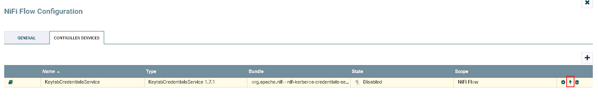

-
完成

NiFi连接HDFS¶
操作场景¶
NiFi中配置HDFS相关处理器，对接HDFS
前提条件¶
-
已经完成NiFi 1.7.1的安装
-
已完成FusionInsight HD和客户端的安装，包含HDFS组件
-
已完成 NiFi Kerberos认证配置
PutHDFS 操作步骤¶
-
将FusionInsight HD客户端中关于HDFS的配置文件
hdfs-site.xml，core-site.xml导入路径/usr/nifi/nifi-1.7.1/conf -
修改
hdfs-site.xml内容，删除如下配置项<property> <name>dfs.client.failover.proxy.provider.hacluster</name> <value>org.apache.hadoop.hdfs.server.namenode.ha.BlackListingFailoverProxyProvider</value> </property> -
修改
core-site.xml内容，修改如下配置项中hacluster改为节点ip加端口号<property> <name>fs.defaultFS</name> <value>hdfs://172.21.3.102:25000</value> </property> -
整个过程的流程图所示：

-
处理器GetFile的配置如下：

具体配置： 1: /home/dataset - 处理器PutHDFS配置如下


具体配置：
1: /usr/nifi/nifi-1.7.1/conf/hdfs-site.xml,/usr/nifi/nifi-1.7.1/conf/core-site.xml
2: 选择NiFi配置Kerberos认证这一节中创建的 KeytabCredentialsService
3: /tmp/nifitest
- 两个处理器的连接配置如下：

- 测试前将测试文件
nifiHDFS.csv放入路径/home/dataset

文件内容如下：
1;EcitQU
2;Hyy6RC
3;zju1jR
4;R9fex9
5;EU2mVq

登录集群HDFS文件系统查看测试结果
hdfs dfs -cat /tmp/nifitest/nifiHDFS.csv

GetHDFS 操作步骤¶
- 整个过程的流程如图所示：

- 处理器GetHDFS配置如下

具体配置：
1: /usr/nifi/nifi-1.7.1/conf/hdfs-site.xml,/usr/nifi/nifi-1.7.1/conf/core-site.xml
2: 选择NiFi配置Kerberos认证这一节中创建的 KeytabCredentialsService
3: /tmp/nifitest/HDFS

具体配置：
1: /home/dataset/HDFS

- 测试前将测试文件
nifiHDFS.csv放到HDFS文件系统的/tmp/nifitest/HDFS路径下

- 测试后

登录安装 FusionInsight HD客户端主机路径/home/dataset/HDFS查看结果

ListHDFS & FetchHDFS 操作步骤¶
-
整个过程的流程如图所示：

-
处理器ListHDFS配置如下：

具体配置为： 1. /usr/nifi/nifi-1.7.1/conf/hdfs-site.xml,/usr/nifi/nifi-1.7.1/conf/core-site.xml 2. KeytabCredentialsService 3. /tmp/nifitest -
处理器RouteOnAttribute具体配置如下：

注意：需要点击**加号**图标增加一条配置，Property 配置为requiredfilenames，Value 配置为${filename:matches('sanguo.*')}
具体配置为：
1. Route to Property name
2. requiredfilenames
3. ${filename:matches('sanguo.*')}
requiredfilenames和unmatched，如图：


- 两个处理器FetchHDFS的配置如下：

具体配置为：
1. /usr/nifi/nifi-1.7.1/conf/hdfs-site.xml,/usr/nifi/nifi-1.7.1/conf/core-site.xml
2. KeytabCredentialsService
- 上、下处理器PutFile配置分别如下：


- 测试前，执行命令
hdfs dfs -ls /tmp/nifitest登录集群HDFS文件系统/tmp/nifitest查看文件

- 测试后

登录FusionInsight HD客户端主机路径/home/dataset/HDFS/matchedFiles和/home/dataset/HDFS/unmatchedFiles分别查看结果：

NiFi连接Hive¶
操作场景¶
NiFi中配置JDBC解析器，对的FI HD Hive接口
前提条件¶
-
已经完成NiFi 1.7.1的安装
-
已完成FusionInsight HD和客户端的安装，包含Hive组件
-
已完成 NiFi Kerberos认证配置
HiveConnectionPool 配置操作步骤¶
-
登录NiFi网页界面，右键选择**Configure**
-
点击**加号**按钮添加服务
-
选择
HiveConnectionPool，点击**ADD**添加

- 点击**齿轮**图标进行配置


具体配置为
1: jdbc:hive2://172.21.3.103:24002,172.21.3.101:24002,172.21.3.102:24002/;serviceDiscoveryMode=zooKeeper;principal=hive/hadoop.hadoop.com@HADOOP.COM
2: KeytabCredentialsService
HiveConnectionPool


-
完成

-
在路径
/usr/nifi/nifi-1.7.1/conf下创建jaas.conf文件内容如下：Client { com.sun.security.auth.module.Krb5LoginModule required useKeyTab=true keyTab="/opt/developuser/user.keytab" principal="developuser" useTicketCache=false storeKey=true debug=true; }; -
执行命令
vi /usr/nifi/nifi-1.7.1/conf/bootstrap.conf配置bootstrap.conf文件如下:
java.arg.17=-Djava.security.auth.login.config=/usr/nifi/nifi-1.7.1/conf/jaas.conf java.arg.18=-Dsun.security.krb5.debug=true -
执行命令
vi /usr/nifi/nifi-1.7.1/conf/nifi.properties配置nifi.properties文件如下：

nifi.zookeeper.auth.type=sasl
nifi.zookeeper.kerberos.removeHostFromPrincipal=true
nifi.zookeeper.kerberos.removeRealmFromPrincipal=true
cd /usr/nifi/nifi-1.7.1/work/nar/extensions/nifi-hive-nar-1.7.1.nar-unpacked/META-INF/bundled-dependencies到NiFi Hive类库中，将原有的zookeeper-3.4.6.jar替换为FusionInsight HD客户端中的zookeeper-3.5.1.jar

SelectHiveQL 读取Hive表 操作步骤¶
-
整个过程的流程如图所示：

-
处理器SelectHiveQL配置如下：


具体配置如下：
1: HiveConnectionPool
2: select * from default.t2
3. CSV
- 处理器PutFile配置如下：

- 运行前登录集群查看hive表t2:

- 运行后：

登录路径/home/dataset/HIVE查看结果：

PutHiveQL 整表导入 操作步骤¶
- 整个过程的流程如图所示：

- 处理器GetFile的配置如下

具体配置如下：
1： /home/dataset/
2: iris.txt
数据文件iris.txt的内容如下:
1,5.1,3.5,1.4,0.2,setosa
2,4.9,3,1.4,0.2,setosa
3,4.7,3.2,1.3,0.2,setosa
4,4.6,3.1,1.5,0.2,setosa
5,5,3.6,1.4,0.2,setosa
6,5.4,3.9,1.7,0.4,setosa
7,4.6,3.4,1.4,0.3,setosa
8,5,3.4,1.5,0.2,setosa
9,4.4,2.9,1.4,0.2,setosa
10,4.9,3.1,1.5,0.1,setosa
- 处理器PutHDFS的配置如下

具体配置如下：
1： /usr/nifi/nifi-1.7.1/conf/hdfs-site.xml,/usr/nifi/nifi-1.7.1/conf/core-site.xml
2： KeytabCredentialsService
3: /tmp/nifitest/loadhive
- 处理器ReplaceText配置如下

具体配置如下：
1: CREATE TABLE IF NOT EXISTS iris_createdBy_NiFi ( ID string, sepallength FLOAT, sepalwidth FLOAT, petallength FLOAT, petalwidth FLOAT, species string ) ROW FORMAT DELIMITED FIELDS TERMINATED BY ',' STORED AS TEXTFILE;LOAD DATA INPATH "hdfs:///tmp/nifitest/loadhive/iris.txt" into table iris_createdBy_NiFi;
- 处理器PutHiveQL配置如下

- 运行前将数据文件
iris.txt导入路径/home/dataset/

- 运行后：

登录HIVE查看测试结果:

PutHiveQL 单行导入 操作步骤¶
- 整个过程的流程如图所示：

- 处理器GetFile的配置如下:

具体配置如下：
1： /home/dataset/
2： iris_add.txt
数据文件iris_add.txt的内容如下:
"11",5.8,2.8,5.1,2.4,"virginica"
"12",6.4,3.2,5.3,2.3,"virginica"
"13",6.5,3,5.5,1.8,"virginica"
"14",5.7,3,4.2,1.2,"versicolor"
"15",5.7,2.9,4.2,1.3,"versicolor"
- 处理器SplitText配置如下：

-
处理器ExtractText配置保持默认配置
-
处理器ReplaceText配置如下:

- 处理器PutHiveQL配置如下:

- 运行前将数据文件
iris_add.txt导入路径/home/dataset/
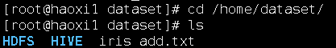
- 运行后：
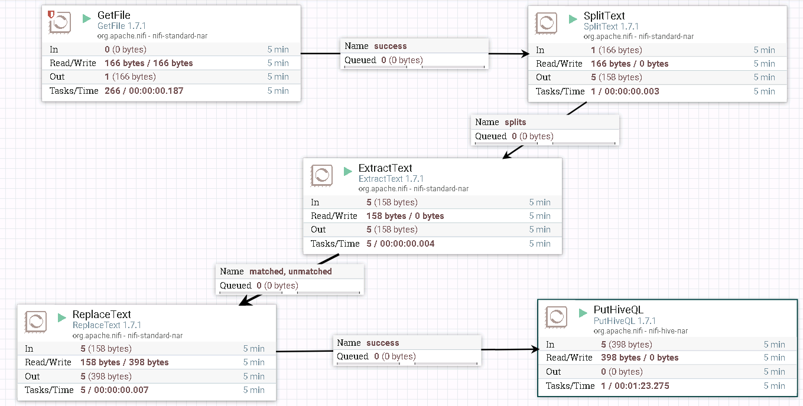
登录HIVE查看测试结果：

NiFi连接HBase¶
操作场景¶
NiFi中配置HBase解析器，对的FI HD HBase接口
前提条件¶
-
已经完成NiFi 1.7.1的安装
-
已完成FusionInsight HD和客户端的安装，包含HBase组件
-
已完成 NiFi Kerberos认证配置
HBase_1_1_2_ClientService 配置操作步骤¶
-
将FusionInsight HD客户端中关于HBase的配置文件
hbase-site.xml导入路径/usr/nifi/nifi-1.7.1/conf -
更换路径
/usr/nifi/nifi-1.7.1/work/nar/extensions/nifi-hbase_1_1_2-client-service-nar-1.7.1.nar-unpacked/META-INF/bundled-dependencies下面的zookeeper-3.4.6.jar为FusionInsight HD客户端自带的zookeeper-3.5.1.jar

-
登录NiFi网页界面，右键选择**Configure**
-
点击**加号**按钮添加服务

- 选择
HBase_1_1_2_ClientService，点击**ADD**添加

- 点击**齿轮**图标进行配置


具体配置如下：
1： /usr/nifi/nifi-1.7.1/conf/hbase-site.xml,/usr/nifi/nifi-1.7.1/conf/core-site.xml
2： KeytabCredentialsService
- 点击**闪电**图标点击闪电图标生效并保存
HBase_1_1_2_ClientService

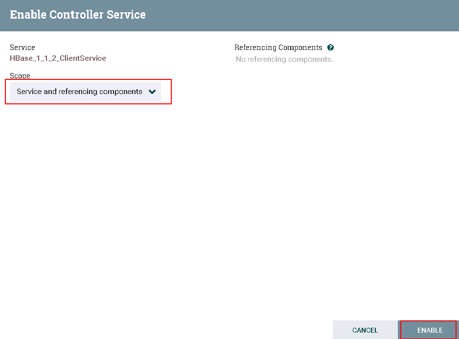
- 完成

PutHBaseJSON 向HBase导入表¶
- 整个过程的流程如图所示：

- 处理器GetFile的配置如下:
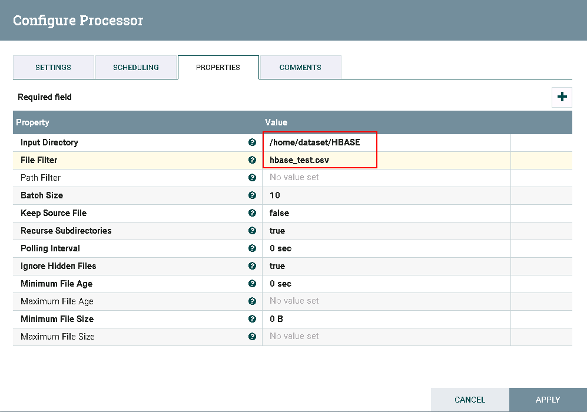
数据文件hbase_test.csv的内容如下:
1,5.1,3.5,setosa
2,6.1,3.6,versicolor
3,7.1,3.7,virginica
- 处理器InverAvroSchema配置如下：

具体配置如下：
1: flowfile-attribute
2: csv
3: false
4: hbase_test_data
- 处理器ConvertCSVToAvro配置如下:

- 处理器ConvertAvroToJSON配置如下：

- 处理器SplitJson配置如下：
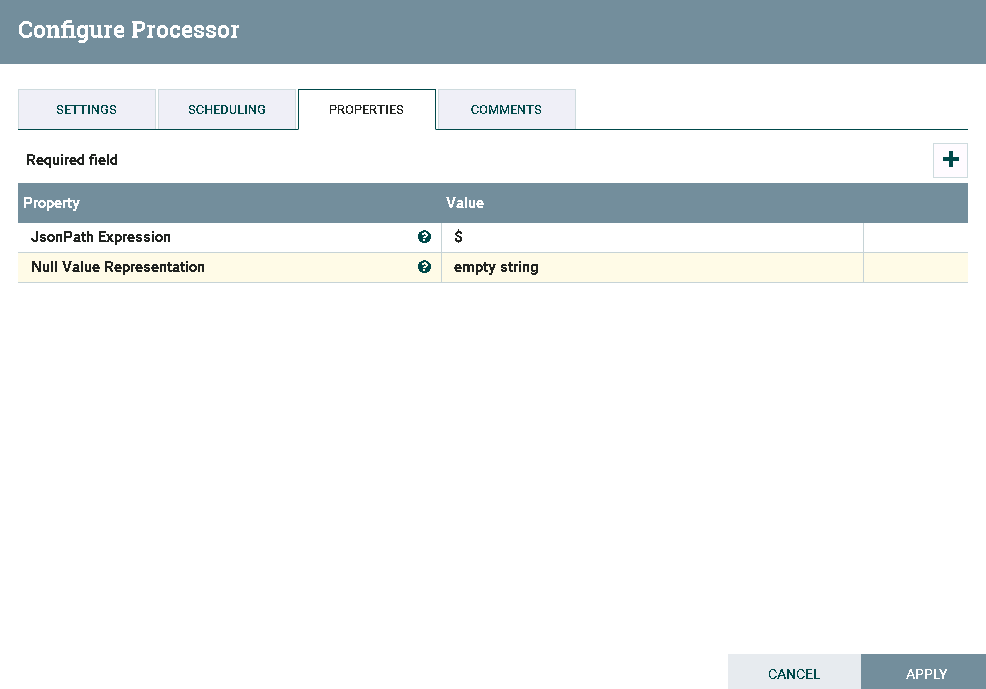
- 处理器PutHBaseJSON配置如下：

具体配置如下:
1: HBase_1_1_2_ClientService
2: hbase_test
3: ${UUID()}
4: data
- 测试前需要将数据文件
hbase_test.csv导入路径/home/dataset/HBASE

并且需要在集群里面建一个hbase表，执行命令
hbase shell
create 'HBase_test','data'

- 运行后：
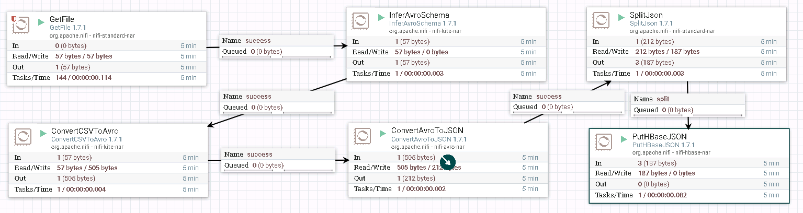
登录集群查看结果：

GetHbase 操作步骤¶
- 整个过程的流程如图所示：

- 驱动器GetHBase的配置如下：

- 驱动器PutFile的配置如下：

- 测试后

登录到路径/home/dataset/GetHBase_test查看结果：


NiFi连接Spark¶
操作场景¶
NiFi中配置Livy解析器，对的FI HD HBase接口
前提条件¶
-
已经完成NiFi 1.7.1的安装
-
已完成FusionInsight HD和客户端的安装，包含Spark2x组件
-
已完成 NiFi Kerberos认证配置
-
已完成Apache Livy 0.5.0的安装 （Livy可安装在FI HD客户端主机，也可以安装在其他主机但是需要保证安装Livy主机能够和FI HD客户端主机以及集群网络互通）
可参考《Apache Livy对接FusionInsight》对接文档完成Apache Livy的安装
配置LivySessionController操作步骤¶
-
登录NiFi网页界面，右键选择**Configure**
-
点击**加号**按钮添加服务

- 选择
LivySessionController，点击**ADD**添加

- 点击**齿轮**图标进行配置


具体配置如下：
1: 172.21.3.43 (已安装Apache Livy的主机ip)
2: 8998 (Livy默认端口，可更改)
3: spark
4：KeytabCredentialsService
- 继续点击**加号**按钮添加服务

-
选择
LivySessionController，点击**ADD**添加 -
点击**齿轮**图标进行配置

更改Controller名字为 LivySessionController_PySpark


具体配置如下：
1: 172.21.3.43 (已安装Apache Livy的主机ip)
2: 8998 (Livy默认端口，可更改)
3: pysaprk
4：KeytabCredentialsService
-
继续点击**加号**按钮添加服务
-
选择
LivySessionController，点击**ADD**添加 -
点击**齿轮**图标进行配置

更改Controller名字为 LivySessionController_SparkR


具体配置如下：
1: 172.21.3.43 (已安装Apache Livy的主机ip)
2: 8998 (Livy默认端口，可更改)
3: sparkr
4：KeytabCredentialsService
- 点击**闪电**图标选择
Service and referencing components生效并保存LivySessionController,LivySessionController_PySpark,LivySessionController_SparkR

- 完成

运行Spark样例操作步骤¶
- 整个过程的流程如图所示：

- 处理器GetFile配置如下：

具体配置如下：
1: /home/dataset/sparkTest
2: code1.txt
代码内容文件code1.txt的内容如下：
1+2
- 处理器ExtractText配置如下：
需要点击**加号**按钮，Property项命名为code1，Value项赋值为$

- 处理器ExecuteSparkInteractive配置为：

具体配置如下：
1: LivySessionController
2: ${code1}
- 测试前将代码文件
code1.txt上传至安装nifi主机的路径/home/dataset/sparkTest下：

在已安装Livy的主机上启动Livy：


- 测试后：

登录Livy sever查看测试结果


运行PySpark样例操作步骤¶
- 整个过程的流程如图所示：
- 处理器GetFile配置如下：

具体配置如下：
1: /home/dataset/sparkTest
2: code2.txt
代码内容文件code2.txt的内容如下：
import random
NUM_SAMPLES = 100000
def sample(p):
x, y = random.random(), random.random()
return 1 if x*x + y*y < 1 else 0
count = sc.parallelize(xrange(0, NUM_SAMPLES)).map(sample).reduce(lambda a, b: a + b)
print "Pi is roughly %f" % (4.0 * count / NUM_SAMPLES)
- 处理器ExtractText配置如下：
需要点击**加号**按钮，Property项命名为code2，Value项赋值为$
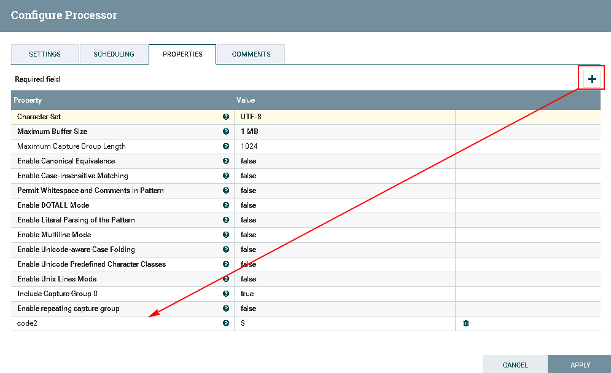
- 处理器ExecuteSparkInteractive配置为：

具体配置如下：
1: LivySessionController_PySpark
2: ${code2}
- 测试前将代码文件
code2.txt上传至安装nifi主机的路径/home/dataset/sparkTest下：

在已安装Livy的主机上启动Livy
- 测试后

登录Livy sever查看测试结果


运行SparkR样例操作步骤¶
- 整个过程的流程如图所示：

注意：在测试过程中如果与Spark，PySpark样例不完全一样
-
处理器GetFile配置如下：

具体配置如下： 1: /home/dataset/sparkTest 2: code3.txt代码内容文件
code3.txt的内容如下：piR <- function(N) { x <- runif(N) y <- runif(N) d <- sqrt(x^2 + y^2) return(4 * sum(d < 1.0) / N) } set.seed(5) cat("Pi is roughly ",piR(1000000) ) -
处理器ExecuteSparkInteractive配置为：

具体配置如下： 1: /home/dataset/sparkTest 2: code3.txt里的代码内容 -
测试前将代码文件
code3.txt上传至安装nifi主机的路径/home/dataset/sparkTest下：
在已安装Livy的主机上启动Livy
-
测试后

登录Livy sever查看测试结果

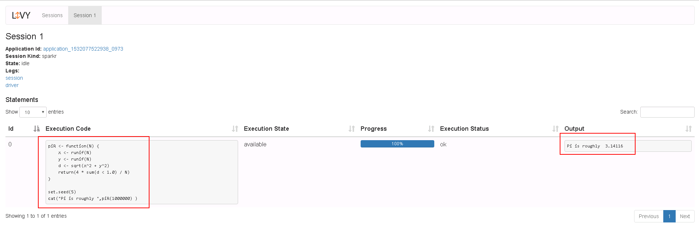
NiFi连接Kafka普通模式¶
操作场景¶
NiFi中配置kafka解析器，对的FI HD kafka 21005端口
前提条件¶
-
已经完成NiFi 1.7.1的安装
-
已完成FusionInsight HD和客户端的安装，包含kafka组件
-
已完成 NiFi Kerberos认证配置
GetHTTP & PutKafka 操作步骤¶
- 整个过程的流程如图所示：

- 驱动器GetHTTP的配置如下：

具体配置如下：
1: http://vincentarelbundock.github.io/Rdatasets/csv/datasets/iris.csv
2: iris.csv

具体配置如下：
1： 172.21.3.102:21005,172.21.3.101:21005,172.21.3.103:21005
2： nifi-kafka-test-demo
3： nifi
- 测试前：
登录FI客户端kafak组件，创建Topic nifi-kafka-test-demo
cd /opt/hadoopclient/Kafka/kafka/bin
kafka-topics.sh --create --topic nifi-kafka-test-demo --zookeeper 172.21.3.101:24002,172.21.3.102:24002,172.21.3.103:24002/kafka --partitions 1 --replication-factor 1

- 测试后：

登录FI客户端kafak组件，查看结果：
cd /opt/hadoopclient/Kafka/kafka/bin
kafka-console-consumer.sh --zookeeper 172.21.3.101:24002,172.21.3.102:24002,172.21.3.103:24002/kafka --topic nifi-kafka-test-demo --from-beginning


PublishKafka_0_11样例操作步骤¶
- 整个工作流为：

- 驱动器GetHTTP的配置如下：
具体配置如下：
1: http://vincentarelbundock.github.io/Rdatasets/csv/datasets/iris.csv
2: iris.csv
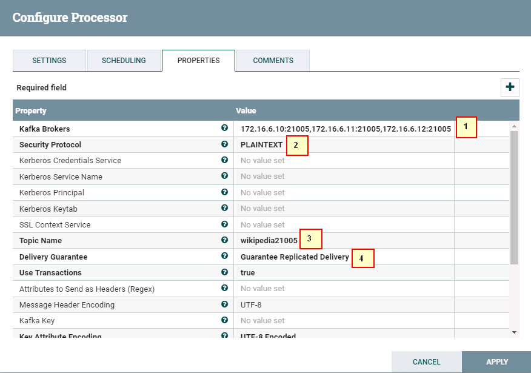
1: 172.16.6.10:21005,172.16.6.11:21005,172.16.6.12:21005
2: SASL_PLAINTEXT
3: wikipedia21005
6: Guarantee Replicated Delivery
- 启动整个工作流:

- 登陆FI HD kafka客户端检查结果：

ConsumeKafka_0_11 操作步骤¶
-
整个过程的流程如图所示：

-
处理器ConsumeKafka_0_11配置如下：

1: 172.21.3.101:21005,172.21.3.102:21005,172.21.3.103:21005
2: PLAINTEXT
3: KeytabCredentialsService
4: Kafka
5: example-metric1
6: DemoConsumer
- 处理器PutFile配置如下：

-
测试前：
用eclipse打开客户端自带的kafka样例代码
kafka-examples，调试使得样例代码能够正常运行NewProducer.java
由于ConsumeKafka是实时获取日志信息的，所以在测试的时候需要先运行
NewProducer.java往Kafka上传日志文件，再同时开启nifi的驱动器ConsumeKafka_0_11进行读取日志的测试 -
测试后：

登录路径
/home/dataset/Kafka查看测试结果：

NiFi连接Kafka安全模式¶
操作场景¶
NiFi中配置kafka解析器，对的FI HD kafka 21007端口
前提条件¶
-
已经完成NiFi 1.7.1的安装
-
已完成FusionInsight HD和客户端的安装，包含kafka组件
-
已完成 NiFi Kerberos认证配置
-
nifi主机ip: 172.16.2.119, FI HD三节点ip: 172.16.6.10-12
认证相关操作步骤¶
- 在nifi主机/opt路径下新建jaas.conf文件，内容为：
KafkaClient { com.sun.security.auth.module.Krb5LoginModule required useKeyTab=true principal="developuser@HADOOP.COM" keyTab="/opt/user_keytabs/101keytab/user.keytab" useTicketCache=false serviceName="kafka" storeKey=true debug=true; };

-
使用命令bin/nifi.sh stop停止nifi
-
在FI HD的kafka客户端中找到对应的kafka client jar包，比如/opt/hadoopclient/Kafka/kafka/libs/kafka-clients-1.1.0.jar
-
将nifi主机下
/opt/nifi/nifi-1.7.1/work/nar/extensions/nifi-kafka-0-11-nar-1.7.1.nar-unpacked/META-INF/bundled-dependencies路径中原来的kafka client jar包kafka-clients-0.11.0.1.jar 使用重命名命令命名为 kafka-clients-0.11.0.1.jar.org 并且把上一步在 FI HD kafka客户端中找到的kafka-clients-1.1.0.jar复制到此路径下。 -
登陆nifi主机，先使用
source /opt/hadoopclient/bigdata_env加载运行的环境变量，然后再使用如下命令加载java运行的jvm参数:export JAVA_TOOL_OPTIONS="-Xmx512m -Xms64m -Djava.security.auth.login.config=/opt/jaas.conf -Dsun.security.krb5.debug=true -Dkerberos.domain.name=hadoop.hadoop.com -Djava.security.krb5.conf=/etc/krb5.conf"
其中/etc/krb5.conf为对应对接集群的认证krb5.conf文件
完成上述步骤后可以使用命令java -version检查jvm参数是否加载成功：

- 使用命令bin/nifi.sh start启动nifi:
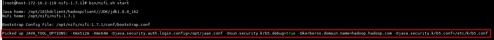
PublishKafka_0_11样例操作步骤¶
- 整个工作流为：
- 驱动器GetHTTP的配置如下：
具体配置如下：
1: http://vincentarelbundock.github.io/Rdatasets/csv/datasets/iris.csv
2: iris.csv

1: 172.16.6.10:21007,172.16.6.11:21007,172.16.6.12:21007
2: SASL_PLAINTEXT
3: KeytabCredentialsService
4: Kafka
5: testtopic_01
6: Guarantee Replicated Delivery
- 运行整个工作流：
- 去集群kafka客户端检查：

ConsumeKafka_0_11样例操作步骤¶
- 整个工作流为：
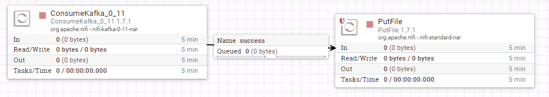
- 驱动器ConsumeKafka_0_11的配置如下：

1: 172.16.6.10:21007,172.16.6.11:21007,172.16.6.12:21007
2: SASL_PLAINTEXT
3: KeytabCredentialsService
4: Kafka
5: testtopic_01
6: Demo
- 驱动器PutFile配置如下：

- 启动整个工作流

- 使用FI HD样例代码使用producer传数据：
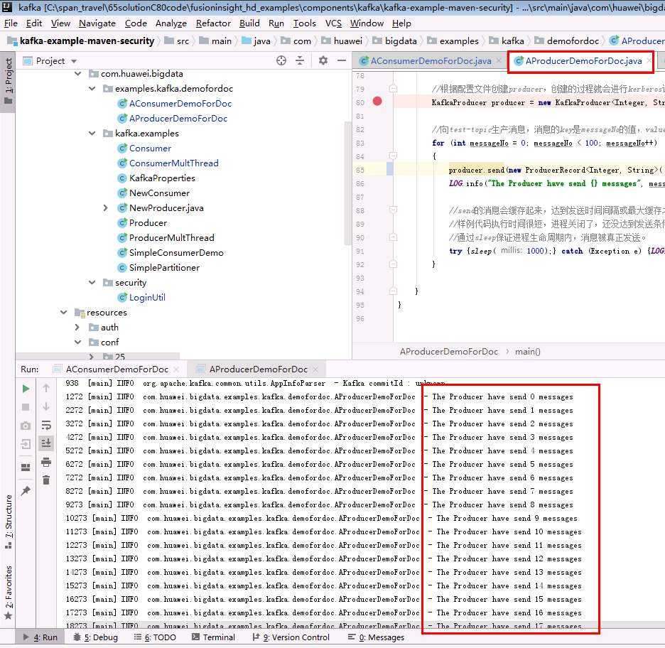
- 登陆nifi主机/opt/nifikafka21007路径检查结果

NiFi对接Solr安全模式¶
环境说明¶
FI HD: 172.16.4.121-123 NIFI: 172.17.2.124
FI HD相关配置:¶
- 参考产品文档solr部分，做如下配置（可不做）：

- 使用如下curl命令在对接集群solr创建一个collection，名字叫做nifi_test
curl --negotiate -k -v -u : "https://172.16.4.122:21101/solr/admin/collections?action=CREATE&name=nifi_test&collection.configName=confWithSchema&numShards=3&replicationFactor=1"
- 登陆客户端，按照如下截图方式登陆kadmin，增加3个节点的HTTP服务principal

注意：执行kadmin –p kadmin/admin命令时初始密码Admin@123，修改后需严格牢记新密码
- 登陆oracle官网获取jce，并适配到对接FI HD集群中
由于kerberos校验和加解密用到密钥长度远超出jre默认的安全字符长度，所以需要到java官网上下载Java Cryptography Extension (JCE)：https://www.oracle.com/technetwork/java/javase/downloads/jce8-download-2133166.html，然后解压到%JAVA_HOME%/jre/lib/security中替换相应的文件。
具体将下载好jce解压，并将解压后的两个jar包US_export_policy.jar，local_policy.jar拷贝到三台服务器172.16.4.121,122,123的/opt/huawei/Bigdata/common/runtime0/jdk-8u201/jre/lib/security/路径下,并且重启solr服务

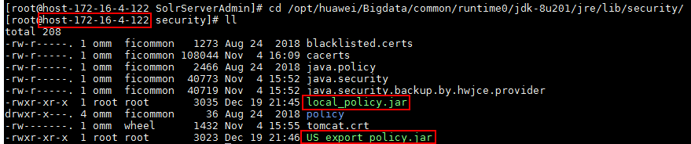
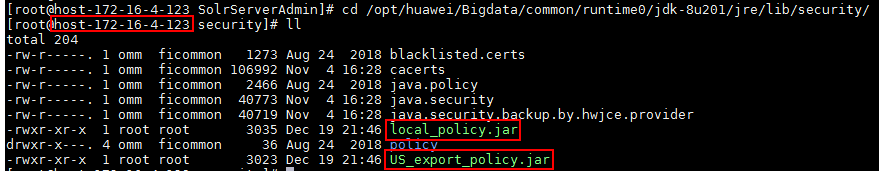
NiFi kerberos相关配置¶
-
nifi.properties配置文件：
- web properties部分做如下更改：

- kerberos部分：

- 增加sasl配置：
nifi.zookeeper.auth.type=sasl nifi.zookeeper.kerberos.removeHostFromPrincipal=true nifi.zookeeper.kerberos.removeRealmFromPrincipal=true -
bootstrap.conf配置文件：
-
增加一个jvm参数：
java.arg.17=-Djava.security.auth.login.config=/opt/jaas.conf

- 因为对接solr，所以找到nifi关于solr的依赖包路径，以本机为例：
/opt/nifi/nifi-1.7.1/work/nar/extensions/nifi-solr-nar-1.7.1.nar-unpacked/META-INF/bundled-dependencies

将原有的zookeeper-3.4.6.jar重命名zookeeper-3.4.6.jar.org，再将FI HD的匹配zookeeper-3.5.1.jar拷贝过来
SSL证书相关配置¶
说明：因为对接solr部署在安全模式上，使用rest接口进行交互的时候是要通过ssl层的认证，需要创建对应的证书（truststore），完成后还要使用spnego同集群solr进行交互。下面将介绍两种认证证书获取的方式，分别对应solr两种对接方法CLOUD和HTTPS
-
huawei-huawei证书
- 登陆linux后台（需要安装openssl），使用如下命令
openssl s_client -host 172.16.4.122 -port 21101 -prexit -showcerts\
会有三段证书，分别为huawei-huawei, huawei-FusionInsight, FusionInsight-172.16.4.122

将huawei-huawei部分内容复制，拷贝到一个文件
/opt/ssltest/huawei-huawei.pem文件中
- 使用命令
keytool -import -alias gca -file /opt/ssltest/huawei-huawei.pem -keystore /opt/ssltest/truststore将上一步生成的huawei-huawei.pem证书内容加入/opt/ssltest/truststore文件中，过程中输入的密码为changeit，完成后输入yes
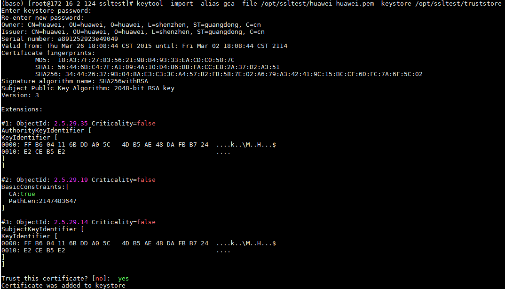
- 登陆linux后台（需要安装openssl），使用如下命令
-
证书链，因为由上已经知道了会生成一个证书链，包含三段，此步骤就是将整个证书链生成一个新的truststore_huawei文件
-
使用命令
echo "" | openssl s_client -host 172.16.4.122 -port 21101 -showcerts | awk '/BEGIN CERT/ {p=1} ; p==1; /END CERT/ {p=0}' > /opt/ssltest/allcerts122.pem将整个证书链重定向到/opt/ssltest/allcerts122.pem文件中
-
使用命令
keytool -import -alias gca -file /opt/ssltest/allcerts122.pem -keystore /opt/ssltest/truststore_chain将上一步生成的allcerts122.pem证书内容加入/opt/ssltest/truststore_chain文件中，过程中输入的密码为changeit，完成后输入yes
NiFi PutSolrContentStream STANDARD模式工作流相关配置¶
说明：Standard模式直接通过HTTPS方式连接solr服务，SSL需要证书链truststore_chain
- 配置 KeytabCredentialsService

- 配置 StandardRestrictedSSLContextService
将这个contoller改名为CHAINStandardRestrictedSSLContextService便于区分
1. /opt/ssltest/truststore_chain
2. changeit
3. JKS
4. TLS

- 整个PutSolrContentStream工作流如图：

- GenerateFlowFile配置如下:
{
"id":"${UUID()}",
"message":"The time is ${now()}"
}
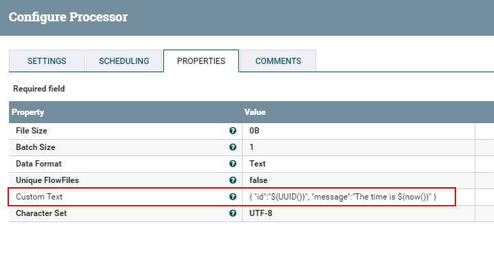
- PutSolrContentStream配置如下：

1. Standard
2. https://172.16.4.122:21101/solr/nifi_test
3. nifi_test
4. KeytabCredentialsService
5. CHAINStandardRestrictedSSLContextService
- 启动工作流
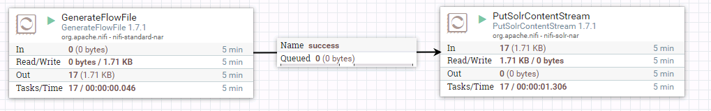
- 登陆集群Manager界面，登陆solradmin webUI查看结果：

NiFi PutSolrContentStream CLOUD模式工作流相关配置¶
说明：Cloud模式先连接集群zookeeper服务然后再读取solr连接信息连接solr服务，SSL只需要huawei-huawei证书truststore即可。
- 配置 KeytabCredentialsService
- 配置 StandardRestrictedSSLContextService
1. /opt/ssltest/truststore
2. changeit
3. JKS
4. TLS

-
整个PutSolrContentStream工作流如图：
-
GenerateFlowFile配置如下:
{ "id":"${UUID()}", "message":"The time is ${now()}" } -
PutSolrContentStream配置如下：

1. Cloud 2. 172.16.4.122:24002/solr 3. nifi_test 4. KeytabCredentialsService 5. StandardRestrictedSSLContextService -
启动工作流
-
登陆集群Manager界面，登陆solradmin webUI查看结果：
NIFI QuerySolr 工作流相关配置¶
说明：QuerySolr连接solr方式也可以选择Standard或者Cloud模式，区别就是请求的链接，以及SSL证书配置不一样，其他一样，链接信息参考上面的配置
- 整个工作流如下：

- QuerySolr Standard配置如下：
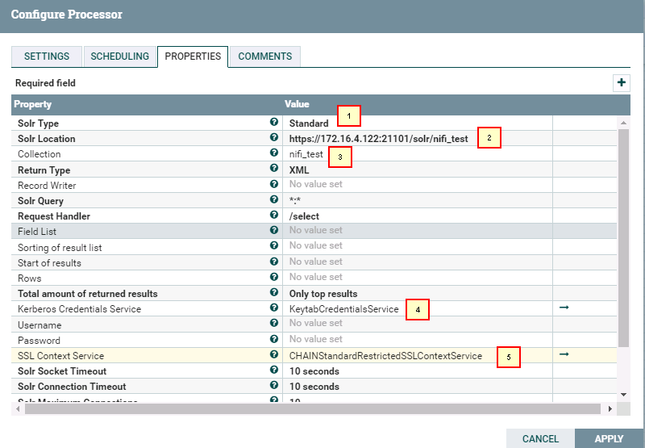
1. Standard
2. https://172.16.4.122:21101/solr/nifi_test
3. nifi_test
4. KeytabCredentialsService
5. CHAINStandardRestrictedSSLContextService
- QuerySolr Cloud配置如下：

1. Cloud
2. 172.16.4.122:24002/solr
3. nifi_test
4. KeytabCredentialsService
5. StandardRestrictedSSLContextService
- PutFile配置如下：

- 启动工作流：

- 登陆后台查看结果：